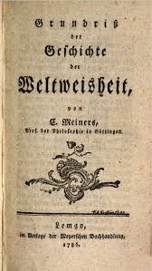

公告

兴趣范围包括下列几个方面：
中心兴趣在语言学、逻辑和计算的接口，特别是以类型逻辑语法为基础的动态语义学研究
- 熟悉的形式语法理论：范畴语法、P&P、HPSG、LFG
- 感兴趣的其他语言学理论：
- 布龙菲尔德之后的结构主义句法学：Zellig Harris, Rulon Wells, Kenneth Lee Pike，C. F Hockett和赵元任
- Jespersen的语法理论
- 结构式语法派系、认知语法和功能语法
- 从事的计算语言学工作：类型化特征结构逻辑，基于合一的语法，机器学习，统计方法，概率上下文无关语法，句法分析算法
- 使用过的编程语言：Python、Java、C#/C++/C、Perl和OO编程
- 正在学习的编程语言：Haskell、Clojure、Common Lisp和函数式编程
- 熟悉的自然语言：除英汉语外，对日语、德语、法语、西班牙语、拉丁语、希腊语和梵语有所猎涉
- 希望学习的自然语言：普什图语、维吾尔语、哈萨克语、乌尔都语、波斯语和阿拉伯语
- 最近开始对哲学感兴趣：逻辑哲学、数学哲学和语言哲学，目前关注重点是卡尔纳普和华沙学派的著作。
最喜爱的名言：
God created the natural numbers, and all else is the work of man.
相信语言学是形式科学和实验科学结合体，它植根于数学、逻辑、计算理论和科学哲学，成长在计算机和互联网上。
新文章
再谈《文科背景的语言学僧能否学习计算语言学》 2020-03-10 08:02:27 current date
「本篇文章被豆瓣封禁」时光荏苒、白驹过隙，离《文科背景的语言学僧能否学习计算语言学》已经过了6年有余。计算语言学、或者更正确的名称，...
title2 time
abstract
title3 time
abstract
title4 time
abstract
title5 time
abstract
title6 time
abstract
title7 time
abstract
title8 time
abstract
title9 time
abstract
title10 time
abstract
title11 time
abstract
title12 time
abstract